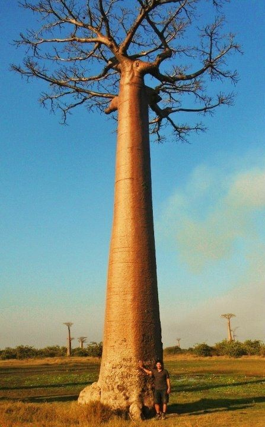
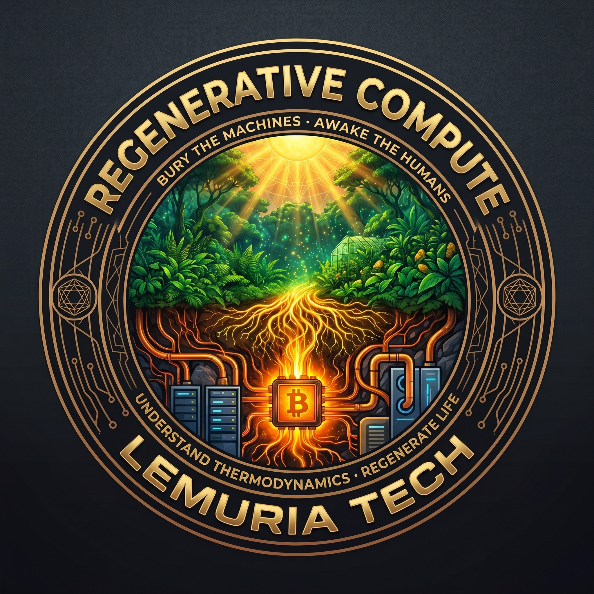

La Blockchain et la Forêt : Le Wood Wide Web The Blockchain and the Forest: The Wood Wide Web
Protocole Mycélien P2P, Preuve de Travail Photosynthétique, Registre ADN & Consensus Byzantin du Vivant P2P Mycelial Protocol, Photosynthetic Proof-of-Work, DNA Ledger & Living Byzantine Consensus

🔬 Protocole de Clarté Épistémique🔬 Epistemic Clarity Protocol
Nous ne faisons pas seulement de la poésie : nous faisons de la rétro-ingénierie (reverse engineering). Chaque analogie du Wood Wide Web s'ancre dans des mécanismes physiques, biologiques et cryptographiques précis. We do not merely write poetry: we perform reverse engineering. Every correspondence in the Wood Wide Web rests on rigorous physical, biological, and cryptographic mechanisms.
Preuve de Travail SolaireSolar Proof of Work
Conversion endergonique ($\Delta G^\circ = +2\,870\text{ kJ/mol}$ de glucose) : impossible d'imprimer de la biomasse sans capter des milliards de photons réels.
Endergonic conversion ($\Delta G^\circ = +2,870\text{ kJ/mol}$ glucose): biomass cannot be counterfeited without capturing billions of physical photons.
Marché Biologique C ↔ PBiological C ↔ P Market
Traçage par isotopes $^{13}\text{C}/^{14}\text{C}$ et $^{32}\text{P}$ démontrant les transferts inter-espèces (Simard, 1997) et les sanctions réciproques contre les tricheurs (Kiers, 2011).
Isotopic $^{13}\text{C}/^{14}\text{C}$ and $^{32}\text{P}$ tracing proving inter-species carbon routing (Simard, 1997) and bilateral sanctions against non-payers (Kiers, 2011).
Merkle, ADN & Sécurité BFTMerkle, DNA & BFT Security
Continuité généalogique de l'ADN sur $3,8\text{ Ga}$, agrégation dendrochronologique sans tiers de confiance et pare-feu immunitaire par diversité d'espèces.
$3.8\text{ Gyr}$ unbroken genetic hash chain, trustless climate recording in tree rings, and Byzantine fault tolerance via polyculture diversity.
Quitter le Piédestal SysAdminStepping Down as SysAdmin
Abandonner les pyramides centralisées à point unique de défaillance (banques centrales, monocultures) pour redevenir des nœuds symbiotiques du vivant.
Replacing fragile centralized pyramids (central banks, clonal monocultures) with distributed mycorrhizal-grade economic architectures.
1. Architecture P2P : Le Protocole Mycélien et le Marché de l'Ombre (4.1) 1. P2P Architecture: The Mycelial Protocol and the Shadow Market (4.1)
Si vous creusez un mètre cube de sol dans une forêt ancienne de Madagascar, vous ne tenez pas simplement de la terre entre vos mains. Vous tenez un Data Center. Ce cube contient des centaines de kilomètres de filaments fongiques : le mycélium. Pendant longtemps, la biologie a ignoré ces filaments, les réduisant à de simples parasites ou à des décomposeurs passifs. C'était un contresens fondamental. Le mycélium est l'infrastructure physique du réseau. C'est le câble à fibre optique de la biosphère.
If you dig a cubic meter of soil in an ancient forest in Madagascar, you're not holding earth in your hands. You're holding a Data Center. That cube contains hundreds of kilometres of fungal filaments, the mycelium. For a long time, biology ignored these filaments, treating them as parasites or as passive decomposers. This was a fundamental misreading. The mycelium is the network's physical infrastructure. It's the fibre optic cable.
Le Modèle FAI (Fournisseur d'Accès) & le Smart Contract de 450 Millions d'Années The ISP Model & the 450-Million-Year-Old Biological Smart Contract
Dans l'éconophysique de la forêt, les arbres sont les « Nœuds » et les « Mineurs » (producteurs d'énergie libre via la photosynthèse). Les champignons mycorhiziens sont les fournisseurs d'accès et les banquiers de liquidité. Un contrat intelligent (Smart Contract) biologique s'exécute sans interruption depuis 450 millions d'années :
In the econophysics of the forest, trees are the "Nodes" and the "Miners" (energy producers via photosynthesis). Mycorrhizal fungi are the access providers and the bankers. There is a biological Smart Contract, 450 million years old:
☀️ 1. L'Arbre (Le Mineur)1. The Tree (The Miner)
Possède la nanotechnologie moléculaire pour capturer le dioxyde de carbone ($\text{CO}_2$) et le transformer en sucres (hydrates de carbone) grâce à l'énergie solaire. C'est la Preuve de Travail (Proof of Work).
Possesses the technology to capture carbon dioxide ($\text{CO}_2$) and transform it into sugars (carbohydrates) using solar energy. This is the Proof of Work.
🍄 2. Le Champignon (Le Banquier)2. The Fungus (The Banker)
Incapable de photosynthétiser, il vit dans l'obscurité totale. Mais il détient un monopole biochimique : ses enzymes dissolvent la roche mère pour en extraire les minéraux rares (Phosphore $\text{P}$, Azote $\text{N}$, Magnésium $\text{Mg}$). C'est la liquidité minérale.
Can't photosynthesise. It lives in the dark. But it possesses a unique ability: its enzymes can dissolve rock to extract rare minerals (Phosphorus $\text{P}$, Nitrogen $\text{N}$, Magnesium $\text{Mg}$). This is mineral liquidity.
Le « Deal » est d'une précision chirurgicale : le champignon étend ses hyphes jusqu'aux racines de l'arbre, injecte le phosphore directement dans les cellules corticales, et en échange, l'arbre lui verse une commission pouvant atteindre 30 % de sa production totale de sucres. Ce n'est pas de l'entraide romantique idéalisée : c'est un marché libre décentralisé. Les études par traçage isotopique montrent que si un arbre cesse de payer (parce qu'il est à l'ombre ou malade), le champignon coupe immédiatement le flux de nutriments : il met le nœud sur « liste noire » (blacklist). Inversement, si un champignon tente d'augmenter abusivement ses tarifs (moins de phosphore pour la même quantité de carbone), l'arbre déconnecte ses racines et se branche sur un concurrent plus honnête. Le prix du phosphore en « étalon-sucre » fluctue en temps réel selon l'offre et la demande locales, sans aucun régulateur central.
The "Deal" is as follows: the fungus extends its hyphae to the tree's roots. It injects phosphorus directly into the tree's cells, and in exchange, the tree pays it a fee of up to 30% of its sugar production. This isn't romanticised mutual aid. It's a decentralised free market. Isotopic studies have shown that if a tree stops paying (because it's shaded or diseased), the fungus immediately cuts off nutrient flow. It "blacklists" the node. Conversely, if the fungus tries to raise its prices (by providing less phosphorus for the same sugar), the tree disconnects its roots and connects to a more honest competitor. It is a perfectly competitive market with dynamic price adjustments. There is no central regulator. The price of phosphorus in "standard sugar" fluctuates in real-time according to local supply and demand.
Le Réseau Maillé (Mesh Network) : Plus fascinant encore, le mycélium interconnecte des arbres d'espèces différentes. Un sapin de Douglas peut transférer du carbone à un bouleau via le réseau fongique. Suzanne Simard a cartographié ces flux et découvert que les arbres anciens — les « Arbres-Mères » (Hubs ou Full Nodes) — agissent comme des banques centrales de liquidité énergétique, injectant des ressources dans le réseau pour soutenir les jeunes pousses à l'ombre (les Light Clients) qui ne disposent pas encore d'assez de puissance de hachage foliaire pour survivre seules. Le Wood Wide Web est littéralement l'ancêtre biologique du Lightning Network de Bitcoin : pair-à-pair, résistant à la censure, sans point unique de défaillance, adossé à une monnaie-énergie.
The Mesh Network: Even more fascinating, mycelium connects trees of different species. A Douglas fir can send carbon to a birch via the fungal network. Suzanne Simard mapped these flows. She discovered that older trees (the "Hubs" or "Full Nodes") act as central banks of liquidity, injecting resources into the network to support young saplings (the "Light Clients") that don't yet have enough hashing power (foliage) to survive on their own. The Wood Wide Web is a peer-to-peer (P2P) network, censorship-resistant, with no single point of failure, operating on an energy-based (carbon) currency. It is, quite literally, the ancestor of Bitcoin's Lightning Network.
| Axe SystémiqueSystemic Axis | Pyramide Anthropocène (Fiat / Monoculture)Anthropocene Pyramid (Fiat / Monoculture) | Le Wood Wide Web (Forêt Primaire)The Wood Wide Web (Primary Forest) | Protocole de Nakamoto (Bitcoin & Lightning)Nakamoto Protocol (Bitcoin & Lightning) |
|---|---|---|---|
| 1. Réseau | Serveurs centraux & silos fragiles.Centralized mainframes & fragile silos. | Filaments mycéliens ($>300\text{ km/m}^3$ de sol).Mycelial hyphae ($>300\text{ km/m}^3$ of soil). | Maillage TCP/IP mondial & canaux Lightning P2P.Global P2P gossip mesh & Lightning channels. |
| 2. Preuve | Décret politique & création monétaire ex nihilo.Political decree & ex nihilo credit creation. | Photosynthèse foliaire (capture de photons $h\nu$).Foliar photosynthesis (capturing solar photons $h\nu$). | Preuve de Travail thermodynamique SHA-256.Thermodynamic SHA-256 Proof-of-Work. |
| 3. Devise | Dette fiduciaire inflationniste.Inflationary debt-backed fiat units. | Hydrates de carbone / Exergie ($\text{C}_6\text{H}_{12}\text{O}_6$).Carbohydrates / Free Joules ($\text{C}_6\text{H}_{12}\text{O}_6$). | Satoshis (énergie-temps cristallisée, plafond $21\text{ M}$).Satoshis (crystallized energy-time, $21\text{ M}$ cap). |
| 4. Liquidité | Taux fixés arbitrairement par comité central.Rates fixed arbitrarily by central committee. | Échange dynamique Carbone $\leftrightarrow$ Phosphore ($\le 30\%$).Dynamic real-time Carbon $\leftrightarrow$ Phosphorus market. | Marché de frais libre (Mempool & routage LN).Free fee market (Mempool & LN liquidity routing). |
| 5. Topologie | Hiérarchie pyramidale SysAdmin (SPOF).SysAdmin top-down hierarchy (Single Point of Failure). | Arbres-Mères (Full Nodes) & jeunes pousses (Light).Mother Trees (Full Nodes) & saplings (Light Clients). | Nœuds complets souverains & clients légers SPV.Sovereign Full Nodes & SPV light wallets. |
| 6. Registre | Bases de données privées réécrites à volonté.Mutable private databases & censored ledgers. | ADN cellulaire ($3,8\text{ Ga}$ sans bloc orphelin).Cellular DNA ($3.8\text{ Gyr}$ unbroken lineage). | Timechain immuable chaînée par hachage.Immutable cryptographically chained Timechain. |
| 7. Évolution | Mises à jour forcées & obsolescence planifiée.Forced top-down mandates & planned obsolescence. | Soft Fork (adaptation) & Hard Fork (spéciation).Soft Fork (adaptation) & Hard Fork (speciation). | BIPs consensuels (Soft Forks SegWit/Taproot).Opt-in consensus upgrades (Soft/Hard Forks). |
| 8. Oracle | Statistiques officielles manipulables.Manipulable official reports & narratives. | Arbre de Merkle inversé & cernes annuels du tronc.Inverted Merkle oak & trustless annual tree rings. | Racine de Merkle (Merkle Root) par bloc de 10 min.Block header Merkle Root every ~10 minutes. |
| 9. Backup | Disques durs fragiles (panne en ~5 ans, sous tension).Fragile spinning/SSD drives (~5 yr lifespan). | Graines dormantes (Cold Storage 10–100+ ans, 0 W).Dormant seeds (Cold Storage 10–100+ yrs, 0 W). | Seed phrase 12/24 mots gravée sur acier hors-ligne.12/24-word mnemonic seed stamped on cold steel. |
| 10. Défense | Champs clonés décimés au premier pathogène.Clonal fields wiped out by a single pathogen. | Biodiversité pare-feu BFT & gaz éthylène P2P.Biodiversity BFT firewall & airborne ethylene alerts. | Tolérance aux fautes byzantines & multi-implémentation.Byzantine Fault Tolerance (BFT) & censorship immunity. |
2. L'Architecture Complète du Vivant (Chapitres 4.1 ──► 4.6) 2. The Complete Architecture of Life (Chapters 4.1 ──► 4.6)
🌲 Cliquez sur une strate pour explorer le texte intégral du chapitre correspondant 🌲 Click any stratum to read the complete chapter text & biophysical metrics
▶ 4.1 · Synthèse Réseau : Le Protocole Mycélien & Lightning Biologique4.1 · Network Synthesis: Mycelial Protocol & Biological Lightning 450 Ma · P2P
Le sous-sol forestier opère comme une chambre de compensation décentralisée : les hyphes fongiques (1 à $10\,\mu\text{m}$ de diamètre, cent fois plus fins qu'une radicelle) explorent les micropores de la roche inaccessible aux racines. En facturant jusqu'à $30\,\%$ des sucres photosynthétisés contre du phosphore biodisponible, et en routant l'excédent énergétique des grands arbres-hubs vers les semis sous couvert, le réseau mycorhizien combine marché au comptant auto-régulé et canaux de liquidité pair-à-pair.
The forest floor operates as a decentralized clearinghouse: fungal hyphae ($1\text{–}10\,\mu\text{m}$ wide, a hundred times finer than tree rootlets) penetrate rock micropores unreachable by roots. By charging up to $30\%$ of photosynthesized sugars in exchange for bioavailable phosphorus—and routing surplus carbon from towering hub trees to shaded seedlings—the mycorrhizal mesh unites a self-regulating spot market with peer-to-peer liquidity channels.
▶ 4.2 · L'Alchimie de la Preuve (La Photosynthèse comme Preuve de Travail)4.2 · The Alchemy of Proof (Photosynthesis as Proof of Work) 300 000 km/s · PoW
Pourquoi la forêt est-elle si précieuse ? Pourquoi ne pouvons-nous pas simplement « imprimer » une forêt comme nous imprimons des billets de banque ? Parce que la forêt repose sur une loi physique impitoyable : la Preuve de Travail (Proof of Work).
Why is the forest so precious? Why can't we simply "print" a forest like we print banknotes? Because the forest rests on an unforgiving physical law: the Proof of Work.
Regardez une feuille. Ce n'est pas un ornement. C'est un panneau solaire biologique d'une complexité stupéfiante, conçu pour accomplir l'impossible : capturer au vol un photon (une particule de lumière filant à $300\,000\text{ km/s}$), l'utiliser pour briser une molécule d'eau par photolyse, et souder des atomes de carbone. Cela s'appelle la photosynthèse.
Look at a leaf. It's not an ornament. It's a biological solar panel of astonishing complexity, designed to achieve the impossible: capture a photon (a particle of light travelling at $300,000\text{ km/s}$), use it to break a water molecule, and join carbon. This is called photosynthesis.
C'est un processus difficile. C'est un processus lent. C'est un processus qui exige un effort monumental. Pour fabriquer un seul gramme de bois sec, l'arbre doit traiter des milliers de litres d'air et capturer des milliards de photons. Il n'existe aucun raccourci. On ne peut pas tricher avec le soleil.
It's a difficult process. It's a slow process. It's a process that requires a monumental effort. To create a single gram of wood, the tree must process thousands of litres of air and capture billions of photons. There are no shortcuts. You can't cheat the sun.
C'est précisément cette difficulté thermodynamique qui confère au vivant sa valeur intrinsèque. Dans l'univers numérique de Bitcoin, les mineurs dépensent de l'électricité pour sécuriser le réseau. Dans le monde physique, les plantes convertissent l'énergie solaire en biomasse pour soutenir toute la biosphère. Le tronc d'un arbre est la cristallisation matérielle de cet effort : c'est une colonne solide de temps, la preuve tangible et irréfutable qu'un travail réel a été accompli jour après jour, année après année.
It is this difficulty that gives life its value. In the digital world of Bitcoin, miners expend electricity to secure the network. In the real world, plants convert solar energy into biomass to sustain the biosphere. The trunk of a tree is the crystallisation of this effort. It is a solid column of time. It is tangible, irrefutable proof that work has been accomplished day after day, year after year.
▶ 4.3 · La Chaîne de Blocs Génétique : L'ADN comme Registre Immuable4.3 · The Genetic Block Chain: DNA as an Immutable Registry 3,8 Milliards d'Années
Si le mycélium constitue le réseau de transmission (TCP/IP), où se trouve la Blockchain ? Où réside le grand livre comptable immuable ? Il est logé au cœur du noyau de chaque cellule. Il s'appelle l'ADN.
If the mycelium is the transmission network (TCP/IP), where is the Blockchain? Where is the immutable ledger? It is in the nucleus of every cell. It is called DNA.
Le Hash de l'Histoire : Une blockchain est une séquence de blocs où chaque bloc embarque l'empreinte cryptographique (le hash) du bloc précédent, garantissant une continuité inviolable. La biologie opère exactement selon ce principe :
The Hash of History: A blockchain is a sequence of blocks where each block contains the cryptographic fingerprint (the hash) of the previous block. This ensures continuity. You can't insert a false block without breaking the chain. Biology works on the same principle:
- « Bloc $N-1$ » : ce sont vos parents.
- « Bloc $N$ » : c'est vous.
- Votre ADN contient la copie quasi intégrale de l'ADN paternel (le Hash précédent), recombinée à celui de votre mère, enrichie de quelques nouvelles transactions (les mutations).
- "Block $N-1$" is your father.
- "Block $N$" is you.
- Your DNA contains a near-complete copy of your father's DNA (the previous Hash), mixed with that of your mother, plus a few new transactions (mutations).
Vous êtes la continuation cryptographique de vos ancêtres. Votre corps est la preuve vivante qu'une chaîne ininterrompue de survivants a validé sa Preuve de Travail depuis 3,8 milliards d'années. Si un seul de vos ancêtres, il y a un milliard d'années, avait échoué à se reproduire (bloc orphelin), la chaîne se serait arrêtée net. Vous n'existeriez pas.
You are the cryptographic continuation of your ancestors. Your body is living proof that an unbroken chain of survivors has succeeded in its Proof of Work for 3.8 billion years. If just one of your ancestors, a billion years ago, had failed to reproduce (orphan block), the chain would have stopped. You wouldn't exist.
Le Hard Fork et le Soft Fork : L'évolution darwinienne n'est rien d'autre qu'une gestion distribuée de mises à jour logicielles (Software Updates) :
The Hard Fork and the Soft Fork: Evolution is nothing more than managing distributed Software Updates:
- Soft Fork (Adaptation mineure) : Une mutation modifie la couleur des yeux ou la résistance à un virus. Le protocole demeure rétrocompatible : l'espèce reste la même.
- Hard Fork (Spéciation) : Une population diverge géographiquement ou génétiquement. Les modifications deviennent si profondes que l'interfécondité avec la branche d'origine n'est plus possible : une nouvelle cryptomonnaie biologique (une nouvelle espèce) est née. Homo Sapiens est un Hard Fork d'Homo Erectus, lui-même issu d'un Hard Fork d'Australopithecus.
- Soft Fork (Minor Adaptation): A mutation changes eye colour or resistance to a virus. The protocol remains compatible. The species remains the same.
- Hard Fork (Speciation): A population splits geographically or genetically. The changes are so profound that reproduction with the original branch is no longer possible. A new cryptocurrency (a new species) is created. Homo Sapiens is a Hard Fork of Homo Erectus, which was a Hard Fork of Australopithecus.
La biodiversité actuelle représente l'ensemble des « Altcoins » génétiques qui ont réussi à survivre sur le marché impitoyable de l'énergie libre. La majorité des lignées passées (dinosaures non-aviens, dodos) ont fait faillite (extinction) lorsque leur modèle de consensus a cessé d'être adapté à un changement brutal de la « difficulté de minage » environnementale.
Biodiversity is the collection of all the genetic "Altcoins" that have managed to survive in the energy market. Most past lineages (dinosaurs, dodos) went bankrupt (extinct) because their consensus model was no longer suited to the environment after a sudden shift in mining difficulty.
▶ 4.4 · L'Arbre de Vérité (La Structure de Merkle & l'Oracle des Cernes)4.4 · The Tree of Truth (Merkle's Structure & the Tree-Ring Oracle) Merkle Root
En informatique, un arbre de Merkle est une structure de données permettant de vérifier l'intégrité d'un immense registre sans avoir à le télécharger intégralement : les données sont hachées deux à deux, puis les empreintes résultantes sont hachées à leur tour jusqu'à obtenir une racine unique : la Merkle Root. Regardez maintenant un arbre physique — un chêne centenaire. C'est un arbre de Merkle inversé (ou plus exactement, l'arbre informatique de Ralph Merkle est la copie conforme de l'arbre biologique) :
In computer science, a Merkle tree is a data structure that allows you to verify the integrity of a large dataset without downloading the entire dataset. The data is hashed in pairs, then the results are hashed until a single root is obtained: the Merkle Root. Look at a physical tree—an oak tree. It is an inverted Merkle tree (or rather, the computer tree is a copy of the biological tree):
- Les Feuilles (Transactions) : Des millions de feuilles captent des photons. Chaque photon converti est une micro-transaction énergétique.
- Les Branches (Hashes Intermédiaires) : Les sucres élaborés par les feuilles convergent des rameaux vers les branches charpentières — une agrégation hiérarchique des flux.
- Le Tronc (Merkle Root) : Tout converge dans le tronc, qui condense le résumé intégral de l'activité photosynthétique du houppier. En analysant la sève élaborée du tronc, on vérifie l'état sanitaire de millions de feuilles sans les inspecter une par une.
- The Leaves (Transactions): Millions of leaves capture photons. Each captured photon is a micro-energy transaction.
- The Branches (Intermediate Hashes): The sugars produced by the leaves are collected in the twigs, which converge towards the branches. This is an aggregation of flows.
- The Trunk (Merkle Root): Everything converges on the trunk. The trunk contains the condensed summary of all the photosynthetic activity of the crown. If you analyse the sap in the trunk, you can cryptographically check the health of millions of leaves without having to inspect them one by one.
L'arbre physique est une machine à compresser la donnée environnementale, et ses cernes de croissance constituent la Blockchain stockée :
• Cerne 1954 : étroit, dense $\Rightarrow$ Hash d'une année de sécheresse sévère.
• Cerne 1955 : large, tendre $\Rightarrow$ Hash d'une année pluvieuse abondante.
L'arbre ne ment pas. Il ne peut pas mentir : il opère en trustlessness absolu, gravant la vérité climatique dans sa propre chair (preuve de vie). Un politicien peut déclarer à la tribune « il n'y a pas eu de sécheresse », mais le chêne a déjà inscrit la transaction sur la chaîne. La nature est le seul oracle fiable.
The physical tree is a machine for compressing environmental data, and its tree rings are the historical record (the stored Blockchain):
• 1954 ring: Dry, dense $\Rightarrow$ Hash from a year of drought.
• 1955 ring: Large, tender $\Rightarrow$ Hash from a rainy year.
The tree doesn't lie. It can't lie. It is in a state of trustlessness. It writes the climate truth in its own flesh (proof of life). A politician can say "there was no drought", but the oak has inscribed the data on the chain. Nature is the only reliable oracle.
▶ 4.5 · Le Sommeil des Données : Cold Storage (La Graine)4.5 · Data Sleep: Cold Storage (The Seed) 0 Watt · Auto-Réplicatif
Si l'arbre meurt, tout est-il perdu ? Non. Car la nature a inventé l'ultime système de sauvegarde hors-ligne : la graine. Tenez un gland de chêne ou une graine millimétrique de séquoia géant au creux de votre main. Cet objet minuscule, inerte, dur comme la pierre, renferme le plan directeur intégral et tout le code source nécessaire pour rebâtir une cathédrale forestière. C'est un prodige de compression algorithmique : des gigaoctets d'instructions génétiques — comment orienter les feuilles vers le zénith, comment forer la roche avec les racines, comment résister au gel et au manque d'eau — sont compactés dans quelques picogrammes d'ADN.
If the tree dies, is it all lost? No. Because nature has invented the ultimate backup system: the seed. Hold an acorn or a redwood seed in your hand. It's tiny, inert, hard as stone. Yet this object contains the complete blueprint, the entire source code for rebuilding the forest. It's a miracle of compression. Gigabytes of genetic data—how to grow roots, how to orient leaves toward the sun, how to combat drought—are wrapped up in a few DNA molecules.
La graine est une capsule temporelle, un véritable Cold Storage. Elle peut dormir dans l'humus dix ans, cent ans, parfois plus d'un millénaire, attendant le signal thermodynamique exact (humidité, chaleur, lumière) pour s'éveiller, sans consommer le moindre watt d'électricité ni exiger de maintenance. Et l'arbre ne met jamais tous ses œufs dans le même panier : il disperse des milliers de graines légèrement mutées aux quatre vents (redondance distribuée), sachant qu'une seule réussite suffit à perpétuer la chaîne. Quelle leçon d'humilité pour nos disques durs fragiles qui tombent en panne après cinq ans ! La nature ne stocke pas l'information sur des supports périssables ; elle la stocke dans des architectures capables d'auto-réplication.
The seed is a time capsule. It's a form of "cold storage". It can wait. It can lie dormant in the soil for ten years, a hundred years, waiting for the perfect conditions to awaken. It needs no electricity, no maintenance. It trusts in time. The tree doesn't put all its eggs in one basket: it produces thousands of seeds, each slightly different (redundancy), scattering its code to the four winds knowing that a single success keeps the chain of life going. This is a humbling lesson for our fragile hard drives that fail after five years. Nature doesn't store information on perishable media; it stores it in architectures capable of self-replication.
▶ 4.6 · Immunité Collective & Sécurité BFT (La Sagesse de la Foule)4.6 · Herd Immunity & BFT Security (Wisdom of the Crowd) Pare-feu Byzantin
Enfin, la forêt nous enseigne comment survivre aux mensonges, aux parasites et aux attaques coordonnées. Dans une forêt saine, la diversité règne en maître. Aucun arbre n'est identique à son voisin : chênes, hêtres, pins, baobabs et fougères cohabitent. Lorsqu'un virus ou un champignon pathogène attaque, il cherche une faille unique, un code commun à exploiter. Dans un champ de blé industriel où toutes les plantes sont des clones génétiques, le virus gagne instantanément : c'est l'effondrement systémique.
Finally, the forest teaches us how to survive lies and attacks. In a healthy forest, diversity reigns supreme. No two trees are alike. There are oaks, beeches, pines, and ferns. When a virus or parasite attacks, it seeks a weakness, a secret code common to all, to infiltrate. In an industrial wheat field where all the plants are clones, the virus wins instantly. It's systemic collapse.
Mais dans la forêt primaire, la biodiversité agit comme un pare-feu cryptographique : le pathogène qui décime le chêne est inoffensif pour le pin, stoppant net la contagion. Mieux encore : les arbres s'avertissent mutuellement ! Lorsqu'une antilope commence à brouter les feuilles d'un acacia, celui-ci libère un gaz messager (l'éthylène, $\text{C}_2\text{H}_4$) porté par le vent. Les acacias voisins, « décodant » cette alerte chimique diffusée en broadcast, synthétisent aussitôt des tanins toxiques amers dans leur feuillage avant même d'être touchés.
But in the forest, diversity acts like a cryptographic firewall. The virus that kills oaks is harmless to pines. The attack is stopped in its tracks. Better still, the trees warn each other: if an antelope starts eating an acacia, it releases a gas (ethylene, $\text{C}_2\text{H}_4$) that travels on the wind. Neighbouring acacias, "sensing" this encrypted message, begin producing poison tannins even before being touched.
C'est la confiance distribuée (Byzantine Fault Tolerance) sans « Chef Forestier » central donnant des ordres. Vous pouvez abattre un arbre ou brûler une clairière, vous ne pouvez pas tuer le réseau : l'information est déjà dupliquée dans les graines et le mycélium a déjà rerouté les flux nutritifs. La vie trouve toujours un chemin.
It's distributed trust with no "Chief Forester" giving orders—an emergent collective intelligence where everyone's safety depends on everyone's vigilance. You can cut down a tree or burn a plot of land, but you can't kill the network: the information has already been duplicated elsewhere and the mycelium has rerouted the flows. Life always finds a way.
3. Laboratoire Interactif : Marché de l'Ombre (C ↔ P) & Oracle Dendro-Merkle 3. Interactive Lab: Mycelial Shadow Market (C ↔ P) & Dendro-Merkle Oracle
Expérimentez en direct la loi de l'offre et de la demande souterraine (si le Champignon B exige plus de $32\,\%$ de commission en sucre, observez l'Arbre-Mère couper ses racines et le mettre sur liste noire !) ainsi que l'inscription irréfutable du climat dans les cernes annuels (dont le fameux contraste entre la sécheresse de 1954 et les pluies de 1955) :
Test subterranean supply-and-demand dynamics live (push Competitor Fungus B's fee above $32\%$ to watch the Mother Tree sever its root connection and blacklist the node!) alongside the trustless climate blockchain inscribed in annual tree rings (featuring the stark contrast between the 1954 drought and 1955 rains):
Carnet d'Ordres Racinaire : Arbre-Mère ↔ Champignons A & BRoot-Hyphae Orderbook: Mother Tree ↔ Fungi A & B
Cernes Annuels (1950–2026) & Arbre de Merkle InverséAnnual Rings (1950–2026) & Inverted Merkle Tree
4. Simulateur Écosystémique : Pare-feu Byzantin (BFT) & Alerte Éthylène vs Monoculture 4. Ecosystem Simulator: Byzantine Firewall (BFT) & Ethylene Alert vs Monoculture
Testez expérimentalement le chapitre 4.6 : comparez la résilience d'une Forêt Primaire Biodiversifiée (chênes, pins, acacias, baobabs reliés par le mycélium) face à un Champ de Monoculture Industrielle composé de clones génétiques. Lancez un virus pathogène, simulez le broutage d'une antilope déclenchant un nuage d'alerte d'éthylène ($\text{C}_2\text{H}_4$), ou abattez un arbre-hub central pour observer le reroutage du réseau !
Experimentally test Chapter 4.6: compare a Biodiverse BFT Primary Forest (oaks, pines, acacias, and baobabs linked by mycelium) against an Industrial Clonal Monoculture. Inject a species-specific pathogen, trigger antelope grazing to watch windborne ethylene ($\text{C}_2\text{H}_4$) activate preemptive tannin shields, or fell a central hub tree to witness mycelial rerouting!
5. Le Code Source Retrouvé : Nous Sommes des Nœuds, Non les SysAdmins de la Nature 5. The Source Code Recovered: We Are All Nodes, Not SysAdmins, & Isomorphic with Nature
En contemplant ce « Wood Wide Web », nous réalisons que nos technologies les plus avancées — Blockchain, Bitcoin, réseaux décentralisés — ne sont pas des inventions futuristes hors-sol. Ce sont des redécouvertes. L'humanité a passé le XXe siècle à ériger des systèmes centralisés et fragiles dotés d'un point unique de défaillance (États-Nations hypertrophiés, Banques Centrales, Agriculture Intensive). Ces architectures violent frontalement les lois distribuées qui ont permis à la vie de traverser 4 milliards d'années de cataclysmes.
By contemplating this "Wood Wide Web", we realise that our most advanced technologies—Blockchain, Bitcoin, decentralised networks—are not futuristic inventions. They are rediscoveries. Humanity spent the 20th century building centralised, fragile systems with a single point of failure (Nation-States, Central Banks, Intensive Agriculture). These systems violate the laws of distributed architecture that have allowed life to survive for 4 billion years.
L'erreur fatale de l'Anthropocène fut de croire que nous étions les administrateurs système (SysAdmin) de la nature : nous avons voulu « optimiser » la forêt en plantations rectilignes, bétonner les rivières et manipuler la monnaie comme une banque centrale tentant de fixer par décret le prix du pain. Ce faisant, nous avons accumulé de colossales dettes techniques et écologiques. La transition vers Homo Biodiversitas consiste à descendre de ce piédestal imaginaire, accepter notre rôle de nœuds — possiblement des nœuds puissants et des mineurs influents — et respecter scrupuleusement les cinq règles du protocole du vivant :
The fatal error of the Anthropocene was believing that we were nature's system administrators (SysAdmin). We believed we could optimise the forest, straighten rivers, and act like a Central Bank trying to fix the price of bread—introducing systemic fragility and massive technical and ecological debts. The vision of Homo Biodiversitas is to come down from this imaginary pedestal, accept our role as nodes—powerful nodes, influential miners—and respect the five rules of the protocol:
⚡ 1. Zéro Dette Thermodynamique1. No Thermodynamic Debt
🛡️ 2. La Sécurité, Non la Guerre2. Safety, Not War
🤝 3. Symbiose Pair-à-Pair3. Symbiosis / We Are One
🌿 4. Valeur Objective du Vivant4. Real Objective Value for Life
🌱 5. La Loi de Transmission : Faire Grandir le Vivant Autour de Soi5. The Law of Transmission: Helping Life Grow Around You
À l'image des Arbres-Mères injectant leur carbone excédentaire dans le réseau mycorhizien pour nourrir les jeunes pousses dans la pénombre du sous-bois : aider les autres êtres humains et la vie elle-même à grandir avec nous. Nous passons enfin de la pyramide (fragile, centralisée, artificielle) au rhizome (résilient, distribué, organique). Pour bâtir une civilisation pérenne, il ne faut pas s'éloigner de la nature, mais copier son code source. Just as ancient Mother Trees route surplus carbon into the mycorrhizal mesh to nurture young saplings in the shaded understory: help other human beings and life itself grow alongside you. We are finally moving from the pyramid (fragile, centralised, artificial) to the rhizome (resilient, distributed, organic). To build an enduring civilisation, we must not distance ourselves from nature, but copy its source code.
6. Flux Exergétiques Comparés & Galerie Visuelle d'Homo Biodiversitas 6. Comparative Exergetic Flows & Homo Biodiversitas Visual Gallery
Le « Wood Wide Web » n'était pas une jolie métaphore poétique : c'était un plan d'architecture systèmes validé par 450 millions d'années d'évolution. The "Wood Wide Web" wasn't a cute poetic metaphor: it was a systems architecture blueprint battle-tested over 450 million years.


🌳 La Sagesse dans le Code Source : Planter, Prouver, Transmettre 🌳 Wisdom in the Source Code: Plant, Prove, Transmit
Le pont a été franchi. Nous savons désormais que la forêt est une blockchain et que la blockchain est une forêt. Le mycélium et le consensus distribué ne sont pas deux objets étrangers : ce sont deux manifestations, à deux échelles différentes, d'une même loi universelle gouvernant l'auto-organisation des systèmes complexes hors équilibre. Une question décisive demeure ouverte pour la suite de notre voyage : comment ce système gère-t-il ses propres limites et la rareté dans un monde fini où rien ne peut croître indéfiniment ?
The bridge has been crossed. We now know that the forest is a blockchain and that the blockchain is a forest. Mycelium and the Blockchain are not two separate things: they are two manifestations, at two different scales, of the same universal law governing complex non-equilibrium systems. One decisive question remains: how does this system manage limits and scarcity in a finite world where nothing can grow indefinitely?
Si le cancer de l'Humanité est son rapport à l'argent et au temps,
Alors la Preuve de Travail sera le fondement de sa guérison.
Car elle est le fondement même de la Vie.
If Humanity's cancer is its relationship with money and time,
Then Proof-of-Work will be the foundation of its cure.
Because it is the foundation of Life.
Peut-être le reste de l'humanité trouvera-t-il un jour « la sagesse à l'origine / dans le code source » — traduction quasi littérale du nom Satoshi Nakamoto. Le chemin est ouvert ; le plus difficile est de nous faire à nouveau confiance. Plantez une graine (Liberté d'action), accomplissez une preuve de travail (Égalité — les lois de la physique sont les mêmes pour tous) pour l'aider à croître, et aidez les autres autour de vous à grandir avec vous (Fraternité humaine). Perhaps the rest of humanity will one day find "wisdom in the source code", which is quite the literal translation of Satoshi Nakamoto. The path is open; the hardest part is trusting ourselves. Plant a seed (Freedom of action), perform a proof of work (Equality — the laws of physics are the same for us all) to help it grow, and help others around us grow with us (human Brotherhood).
📚 Références Scientifiques & Corpus ZenodoScientific References & Zenodo Corpus
- Ranaora, P., & Yii, J. (2026). Nakamoto Distributed Consensus as a Non-Equilibrium Phase Transition: A Phenomenological Statistical-Physics Description. Zenodo. https://doi.org/10.5281/zenodo.19160047
- Ranaora, P., & Yii, J. (2026). Bitcoin as a Cybernetic Super-Organism: A Systems Biology Framework for the Nakamoto Consensus. Zenodo. https://doi.org/10.5281/zenodo.19411598
- Simard, S. W., Perry, D. A., Jones, M. D., Myrold, D. D., Durall, D. M., & Molina, R. (1997). Net transfer of carbon between ectomycorrhizal tree species in the field. Nature, 388, 579–582.
- Kiers, E. T., Duhamel, M., Beesetty, Y., Mensah, J. A., Franken, O., Verbruggen, E., ... & Bücking, H. (2011). Reciprocal rewards stabilize cooperation in the mycorrhizal symbiosis. Science, 333(6044), 880–882.

À propos de l'auteur — Pascal Ranoroarijaona (Ranaora) About the Author — Pascal Ranoroarijaona (Ranaora)
Explorateur des convergences scientifiques et défenseur du vivant, Pascal Ranaora est un polymathe curieux qui navigue à l'intersection de la thermodynamique, de la biologie des systèmes et de la cryptographie pour déchiffrer les lois universelles gouvernant nos organisations et comprendre l'économie comme un grand organisme vivant interconnecté. Dans son livre Homo Biodiversitas, il propose une théorie unifiée où la vie retrouve sa centralité économique — avec la vision d'un monde où les mathématiques deviendront un langage universel de paix transcendant les frontières politiques, traditionnelles et religieuses. Pascal Ranaora is an explorer of scientific convergences and an advocate for life. A curious and open-minded polymath, he navigates the intersection of thermodynamics, systems biology, and cryptography to decipher the universal laws that govern our systems and to understand the economy as a large, interconnected living organism. In his book Homo Biodiversitas, he proposes a unified theory where life regains its economic centrality—envisioning a world where mathematics becomes a universal language of peace, transcending political, traditional, and religious boundaries.
☀️ The Sun Standard
Portail de recherche ouverte sur l'éconophysique post-fiduciaire, le temps thermique et les preuves formelles.Open-science portal on post-fiat econophysics, thermal time, and formal verification.

🌱 Regenerative Compute
Ingénierie symbiotique : recyclage de l'effet Joule informatique en eau MOF-303, biochar et serres vivrières.Symbiotic hardware turning compute heat into MOF-303 water, biochar, and organic harvests.
📖 Homo Biodiversitas (PDF)
Le manifeste thermodynamique complet unissant l'Émergie d'Odum à la Preuve de Travail de Nakamoto.Full thermodynamic treatise uniting H.T. Odum's Emergy with Nakamoto's Proof-of-Work.
👁️ Protocole Trinité
Provenance cryptographique SHA-256 + Nostr + OpenTimestamps face à l'inflation synthétique du faux.SHA-256 + Nostr + OpenTimestamps provenance shielding authentic human truth.